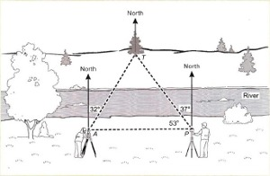
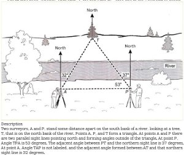
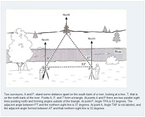

Sample 5: Angles on a Survey Map

View a larger version of this image.
This is a page from a secondary education assessment. The full page where it appears can be seen below.

View a larger version of this image.
Challenges of Assessments
Making images accessible for assessments, especially formal assessments such as those used on standardized tests, can be more complex than making images accessible for books and require additional considerations. Making images accessible for formal assessments is beyond the scope of this sample book, but it is important to understand the range of issues. While educators may freely adapt textbook images to make them accessible for students who need them, they must seek permission from the company producing the assessment. In addition, changing a standardized assessment image in any way may affect the scope of what is being tested.
There are many less formal kinds of assessments such as in-class or end-of-chapter tests and quizzes that are included in textbooks, workbooks, and teacher’s guides. The choice of modality varies depending on factors such as the information to be conveyed, grade level, student knowledge and experience, and the image itself. It is also important to consider the content of the expected answer. An image description must provide enough information without giving away the answer.
Making This Image Accessible
This image can be made accessible with an image description or by using a tactile graphic. How this image description is displayed depends on the reading tool being used. In most mainstream reading tools, the description will not be displayed at all, but in tools designed for accessibility (or mainstream tools with accessibility features enabled), the description could be displayed below the image, voiced as part of the content, or both.
Text or Audio Description
Two surveyors, A and P, stand some distance apart on the south bank of a river, looking at a tree, T, that is on the north bank of the river. Points A, P, and T form a triangle. At points A and P, there are two parallel sight lines pointing north and forming angles outside of the triangle. At point P, angle TPA is 53 degrees. The adjacent angle between PT and the northern sight line is 37 degrees. At point A, angle TAP is not labeled, and the adjacent angle formed between AT and that northern sight line is 32 degrees.
EPUB 3

View a larger version of this image.
The image above shows how the image description would look when implemented in an EPUB 3 file. The code used to create it is:
<figure aria-describedby="survey-desc"> <img src="images/survey.jpg" alt="survey map with angles"/> <figcaption> <p> </p> <details id="survey-desc"> <summary>Description</summary> <p> Two surveyors, A and P, stand some distance apart on the south bank of a river, looking at a tree, T, that is on the north bank of the river. Points A, P, and T form a triangle. At points A and P, there are two parallel sight lines pointing north and forming angles outside of the triangle. At point P, angle TPA is 53 degrees. The adjacent angle between PT and the northern sight line is 37 degrees. At point A, angle TAP is not labeled, and the adjacent angle formed between AT and that northern sight line is 32 degrees. </p> </details> </figcaption> </figure>
DAISY

View a larger version of this image.
The image above shows how the image description would look when implemented in a DAISY file. The code used to create it is:
<imggroup><p><img id="angles1" src="images/survey.jpg" alt="survey map with angles" /></p> <prodnote id="prodnote_000001"> <p smilref="survey.smil#p_000001"> Two surveyors, A and P, stand some distance apart on the south bank of a river, looking at a tree, T, that is on the north bank of the river. Points A, P, and T form a triangle. At points A and P, there are two parallel sight lines pointing north and forming angles outside of the triangle. At point P, angle TPA is 53 degrees. The adjacent angle between PT and the northern sight line is 37 degrees. At point A, angle TAP is not labeled, and the adjacent angle formed between AT and that northern sight line is 32 degrees. </p> </prodnote></imggroup>
Tactile Graphic
A tactile graphic allows the image to be interpreted manually. This graphic was developed for a high resolution graphics embosser.

DIAGRAM Content Model
The DIAGRAM Content Model is a standard way to structure image description data, including multiple descriptions, annotations, and pointers to alternate file formats. The Content Model is implemented in XML which is transformed into formatted HTML using XSLT. More information about the Content Model is available on the DIAGRAM Center website.
In this example, the Content Model contains multiple image descriptions, a note from the teacher, and a pointer to a tactile graphic.
The code used for this example may look like:
<?xml version="1.0" encoding="UTF-8"?>
<?xml-stylesheet type="text/xsl" href="desc2html.xsl"?>
<d:description xml:id="angles-desc" xml:lang="en"
xmlns="http://www.daisy.org/ns/z3998/authoring/"
xmlns:d="http://www.daisy.org/ns/z3998/authoring/features/description/"
xmlns:xlink="http://www.w3.org/1999/xlink">
<d:head>
<meta property="dc:identifier" content="source-or-self-identification?" />
<meta property="dc:language" content="en-US" />
<meta property="diagram:purpose">Illustrates the relationships between
the surveying crew and the tree.</meta>
<meta property="diagram:targetAge" content="14-18" />
<meta property="diagram:targetGrade" content="9-12" />
<meta property="diagram:descriptionQuality" content="7" />
<meta property="dc:creator" xml:id="author01">John Doe</meta>
<meta about="#author01" property="diagram:credentials">Ph.D. in Civil Engineering</meta>
<meta property="dc:rights" content="???" />
<meta property="dc:accessRights">This resource is for use by academic
institutions only.</meta>
<meta rel="diagram:currentVersion"
resource="http://example.com/geometry/k12/angles/current"/>
<meta rel="diagram:thisVersion" resource="http://example.com/geometry/k12
/angles/1.2/description.xml"/>
<meta rel="diagram:previousVersion" resource="http://example.com/geometry
/k12/angles/1.1/description.xml"/>
<meta rel="diagram:alternateVersion" xml:id="alternateVersion01"
resource="http://example.com/math/k12/angles/current">
<meta property="dc:description">This description provides the
mathematical explanation for calculating angles.</meta>
</meta>
<meta rel="diagram:repository"
resource="http://example.com/diagram/repository/">
<meta property="diagram:queryConcept" content="angles"/>
<meta property="diagram:queryConcept" content="calculating"/>
<meta property="diagram:queryConcept" content="triangles"/>
</meta>
</d:head>
<d:body>
<d:summary xml:id="summary">
<p>The image depicts two surveyors measuring the angles between themselves and a tree.</p>
</d:summary>
<d:longdesc xml:id="longdesc01">
<p>Two surveyors, A and P, stand some distance apart on the south bank
of a river, looking at a tree, T, that is on the north bank of the river.
Points A, P, and T form a triangle. At points A and P, there are two parallel
sight lines pointing north and forming angles outside of the triangle. At
point P, angle TPA is 53 degrees. The adjacent angle between PT and the
northern sight line is 37 degrees. At point A, angle TAP is not labeled,
and the adjacent angle formed between AT and that northern sight line is
32 degrees. </p>
</d:longdesc>
<annotation ref="longdesc01" role="diagram:comment" by="teacher">
<p>The distance between the points is not needed.</p>
</annotation>
<d:simplifiedLanguageDescription xml:id="simpledesc01">
<p>T, A, and P are the three points on a triangle. Angle TPA is 53 degrees
with an adjacent angle of 37 degrees. The angle adjacent to angle TAP is 32 degrees.
</p>
</d:simplifiedLanguageDescription>
<d:tactile xml:id="tactile01">
<object src="http://example.com/tactiles/repository/angles.svg"
srctype="image/svg+xml"/>
<d:tour>
<p>In the upper left corner of the tactile…</p>
</d:tour>
</d:tactile>
<d:simplifiedImage xml:id="alt-image">
<object src="http://example.com/…/angles-lv.svg"
srctype="image/svg+xml"/>
<d:tour>
<p>Moving front the top left corner of the image…</p>
</d:tour>
</d:simplifiedImage>
</d:body>
</d:description>
The Content Model is referenced in an EPUB 3, DAISY, or HTML5 file using the aria-describedat attribute which is currently under development. The code to reference the sample description file above (su rveymap.xml) may look like:
<img src="images/survey.jpg" alt="survey map with angles"
aria-describedat="http://www.example.com/surveymap.xml" />